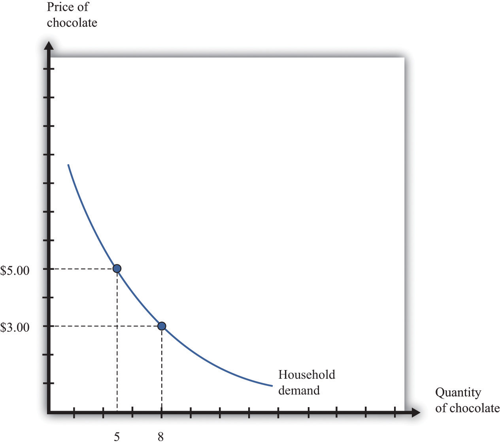
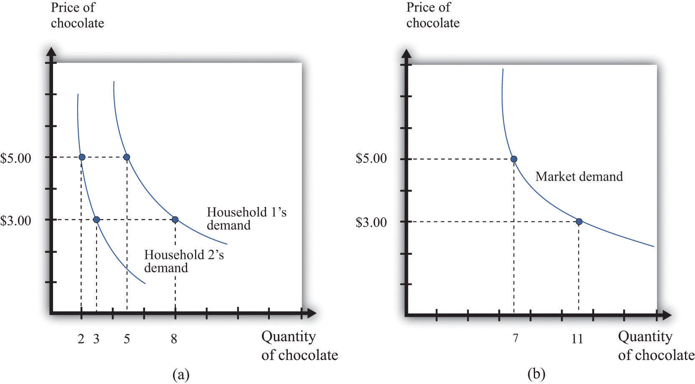
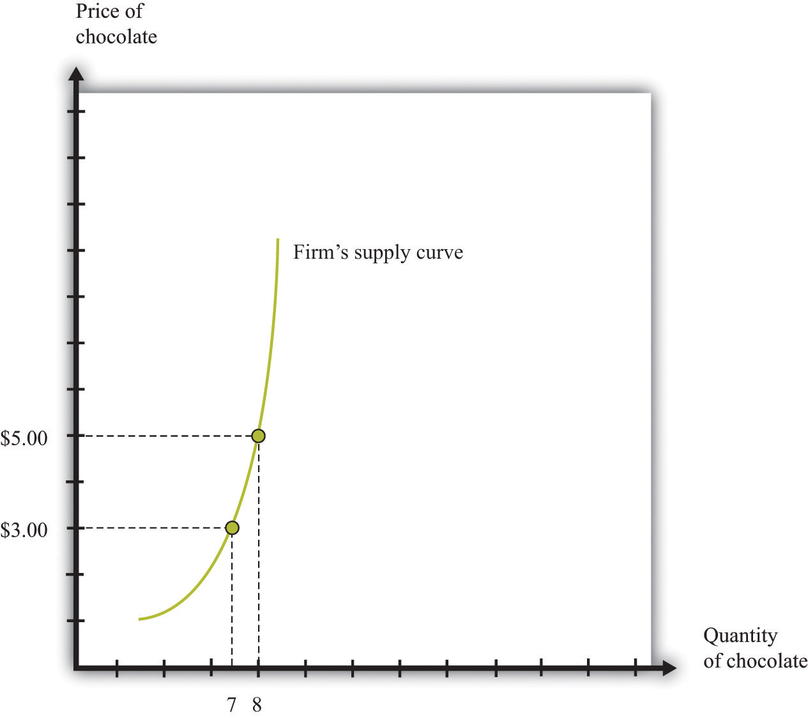
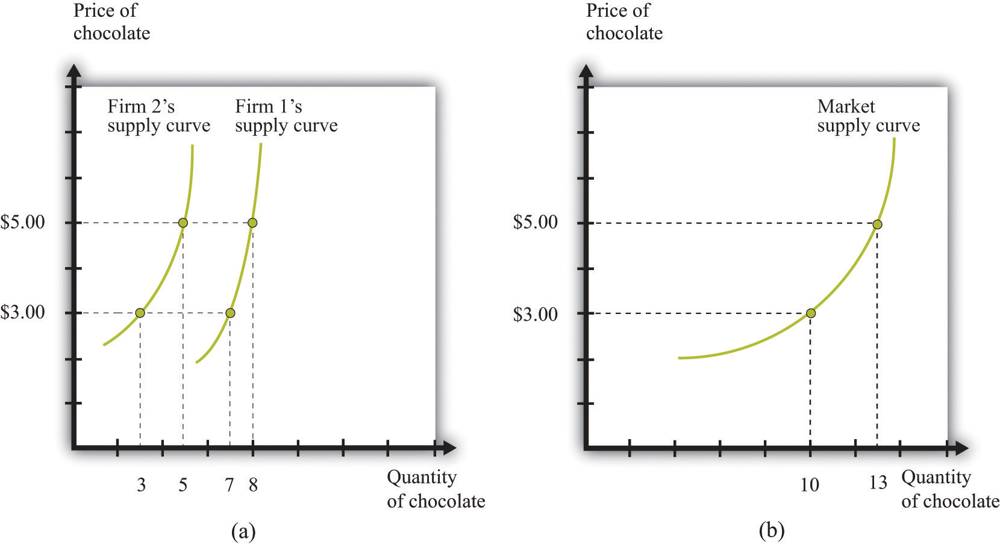
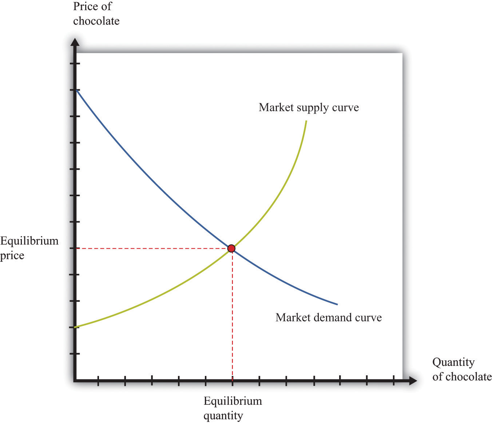

We begin the chapter with the individual demand curve—sometimes also called the household demand curve—that is based on an individual’s choice among different goods. (In this chapter, we use the terms individual and household interchangeably.) We show how to build the market demand curve from these individual demand curves. Then we do the same thing for supply, showing how to build a market supply curve from the supply curves of individual firms. Finally, we put them together to obtain the market equilibrium.
Figure 8.1 "The Demand Curve of an Individual Household" is an example of a household’s demand for chocolate bars each month. Taking the price of a chocolate bar as given, as well as its income and all other prices, the household decides how many chocolate bars to buy. Its choice is represented as a point on the household’s demand curve. For example, at $5, the household wishes to consume five chocolate bars each month. The remainder of the household income—which is its total income minus the $25 it spends on chocolate—is spent on other goods and services. If the price decreases to $3, the household buys eight bars every month. In other words, the quantity demanded by the household increases. Equally, if the price of a chocolate bar increases, the quantity demanded decreases. This is the law of demand in operation.
One way to summarize this behavior is to say that the household compares its marginal valuation from one more chocolate bar to price. The marginal valuation is a measure of how much the household would like one more chocolate bar. The household will keep buying chocolate bars up to the point where
marginal valuation = price.Toolkit: Section 31.1 "Individual Demand"
You can review the foundations of individual demand and the idea of marginal valuation in the toolkit.
Figure 8.1 The Demand Curve of an Individual Household
The household demand curve shows the quantity of chocolate bars demanded by an individual household at each price. It has a negative slope: higher prices lead people to consume fewer chocolate bars.
Table 8.1 Individual and Market Demand
| Price ($) | Household 1 Demand | Household 2 Demand | Market Demand |
|---|---|---|---|
| 1 | 17 | 10 | 27 |
| 3 | 8 | 3 | 11 |
| 5 | 5 | 2 | 7 |
| 7 | 4 | 1.5 | 5.5 |
In most markets, many households purchase the good or the service traded. We need to add together all the demand curves of the individual households to obtain the market demand curve. To see how this works, look at Table 8.1 "Individual and Market Demand" and Figure 8.2 "Market Demand". Suppose that there are two households. Part (a) of Figure 8.2 "Market Demand" shows their individual demand curves. Household 1 has the demand curve from Figure 8.1 "The Demand Curve of an Individual Household". Household 2 demands fewer chocolate bars at every price. For example, at $5, household 2 buys 2 bars per month; at $3, it buys 3 bars per month. To get the market demand, we simply add together the demands of the two households at each price. For example, when the price is $5, the market demand is 7 chocolate bars (5 demanded by household 1 and 2 demanded by household 2). When the price is $3, the market demand is 11 chocolate bars (8 demanded by household 1 and 3 demanded by household 2). When we carry out the same calculation at every price, we get the market demand curve shown in part (b) of Figure 8.2 "Market Demand".
Toolkit: Section 31.9 "Supply and Demand"
You can review the market demand curve in the toolkit.
Figure 8.2 Market Demand
Market demand is obtained by adding together the individual demands of all the households in the economy.
Because the individual demand curves are downward sloping, the market demand curve is also downward sloping: the law of demand carries across to the market demand curve. As the price decreases, each household chooses to buy more of the product. Thus the quantity demanded increases as the price decreases. Although we used two households in this example, the same idea applies if there are 200 households or 20,000 households. In principle, we could add together the quantities demanded at each price and arrive at a market demand curve.
There is a second reason why demand curves slope down when we combine individual demand curves into a market demand curve. Think about the situation where each household has a unit demand curve: that is, each individual buys at most one unit of the product. As the price decreases, the number of individuals electing to buy increases, so the market demand curve slopes down.See Chapter 4 "Everyday Decisions" and Chapter 6 "eBay and craigslist" for discussions of unit demand. In general, both mechanisms come into play.
When the price decreases, there are more buyers, and each buyer buys more.
In a competitive marketA market that satisfies two conditions: (1) there are many buyers and sellers, and (2) the goods the sellers produce are perfect substitutes., a single firm is only one of the many sellers producing and selling exactly the same product. The demand curve facing a firm exhibits perfectly elastic demand, which means that it sets its price equal to the price prevailing in the market, and it chooses its output such that this price equals its marginal costThe extra cost of producing an additional unit of output, which is equal to the change in cost divided by the change in quantity. of production.At the end of Chapter 7 "Where Do Prices Come From?", we derive the supply curve of a firm in a competitive market. If it were to try to set a higher price, it could not sell any output at all. If it were to set a lower price, it would be throwing away profits. Thus, for a competitive firm, the quantity produced satisfies this condition:
price = marginal cost.Toolkit: Section 31.2 "Elasticity"
For more information on elasticity, see the toolkit.
We typically expect that marginal cost will increase as a firm produces more output. Marginal cost is the cost of producing one extra unit of output. The cost of producing an additional unit of output generally increases as firms produce a larger and larger quantity. In part, this is because firms start to hit constraints in their capacities to produce more product. For example, a factory might be able to produce more output only by running extra shifts at night, which require paying higher wages.
If marginal cost is increasing, then we know the following:
Indeed, the supply curve of an individual firm is the same as its marginal cost curve.
Figure 8.3 "The Supply Curve of an Individual Firm" illustrates the supply curve for a firm. A firm supplies seven chocolate bars at $3 and eight chocolate bars at $5. From this we can deduce that the marginal cost of producing the seventh chocolate bar is $3. Similarly, the marginal cost of producing the eighth chocolate bar is $5.
Figure 8.3 The Supply Curve of an Individual Firm
A firm’s supply curve, which is the same as its marginal cost curve, shows the quantity of chocolate bars it is willing to supply at each price.
Just as the market demand curve tells us the total amount demanded at each price, the market supply curve tells us the total amount supplied at each price. It is obtained analogously to the market demand curve: at each price we add together the quantity supplied by each firm to obtain the total quantity supplied at that price. If we perform this calculation for every price, then we get the market supply curve. Figure 8.4 "Market Supply" shows an example with two firms. At $3, firm 1 produces 7 bars, and firm 2 produces 3 bars. Thus the total supply at this price is 10 chocolate bars. At $5, firm 1 produces 8 bars, and firm 2 produces 5 bars. Thus the total supply at this price is 13 chocolate bars.
The market supply curve is increasing in price. As price increases, each firm in the market finds it profitable to increase output to ensure that price equals marginal cost. Moreover, as price increases, firms who choose not to produce and sell a product may be induced to enter into the market.A similar idea is in Chapter 6 "eBay and craigslist", where we show how to add together unit supply curves to obtain a market supply curve.
Figure 8.4 Market Supply
Market supply is obtained by adding together the individual supplies of all the firms in the economy.
In general, both mechanisms come into play. The market supply curve slopes up for two reasons:
When the price increases, there are more firms in the market, and each firm produces more.
In a perfectly competitive market, we combine the market demand and supply curves to obtain the supply-and-demand framework shown in Figure 8.5 "Market Equilibrium". The point where the curves cross is the market equilibrium.The definition of equilibrium is also presented in Chapter 6 "eBay and craigslist". At this point, there is a perfect match between the amount that buyers want to buy and the amount that sellers want to sell. The term equilibrium refers to the balancing of the forces of supply and demand in the market. At the equilibrium price, the suppliers of a good can sell as much as they wish, and demanders of a good can buy as much of the good as they wish. There are no disappointed buyers or sellers.
Toolkit: Section 31.9 "Supply and Demand"
You can review the definition and meaning of equilibrium in the supply-and-demand framework in the toolkit.
Figure 8.5 Market Equilibrium
In a competitive market, the equilibrium price and the equilibrium quantity are determined by the intersection of the supply and demand curves.
Because the demand curve has a negative slope and the supply curve has a positive slope, supply and demand will cross once. Both the equilibrium price and the equilibrium quantity will be positive. (More precisely, this is true as long as the vertical intercept of the demand curve is larger than the vertical intercept of the supply curve. If this is not the case, then the most that any buyer is willing to pay is less than the least any seller is willing to accept and there is no trade in the market.)
Table 8.2 Market Equilibrium: An Example
| Price ($) | Market Supply | Market Demand |
|---|---|---|
| 1 | 5 | 95 |
| 5 | 25 | 75 |
| 10 | 50 | 50 |
| 20 | 100 | 0 |
Table 8.2 "Market Equilibrium: An Example" shows an example of market equilibrium with market supply and market demand at four different prices. The equilibrium occurs at $10 and a quantity of 50 units. The table is based on the following equations:
market demand = 100 − 5 × priceand
market supply = 5 × price.Equations such as these and diagrams such as Figure 8.5 "Market Equilibrium" are useful to economists who want to understand how the market works. Keep in mind, though, that firms and households in the market do not need any of this information. This is one of the beauties of the market. An individual firm or household needs to know only the price that is prevailing in the market.
Economists typically believe that a perfectly competitive market is likely to reach equilibrium for several reasons.